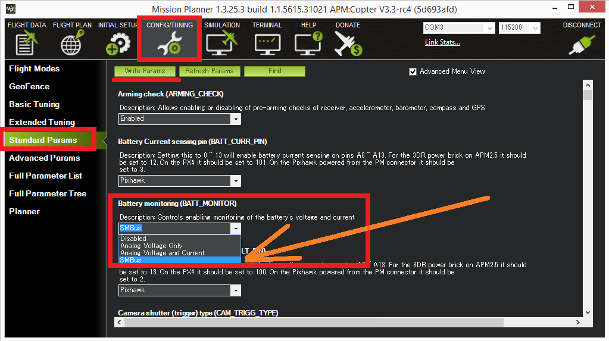

Smart Batteries¶
ArduPilot supports several types of “smart battery” that communicate using SMBus:
the Solo battery
Maxell
Generic support for SUI3 and SUI6 SMBus batteries
While not yet very common, smart batteries are easier to attach and detach from the vehicle and are capable of providing more information on the state of the battery including capacity, individual cell voltages, temperature, etc.
Setup through Mission Planner¶
{kind=link}
Set BATT_MONITOR to appropriate Smart Battery model Set BATT_I2C_BUS to the appropriate bus number
For adding more batteries, set BATT2_MONITOR & BATT2_I2C_BUS, BATT3_MONITOR & BATT3_I2C_BUS,etc.
Restart the board and connect with a ground station and check the battery voltage appears. The BATT_CAPACITY parameter should be automatically updated to the batteries actual capacity in mAh.
Additional information¶
Limitations¶
Battery “address discovery” is not supported so the battery must use the I2C address 0x0B (7 bit address). Most smart batteries use this address.